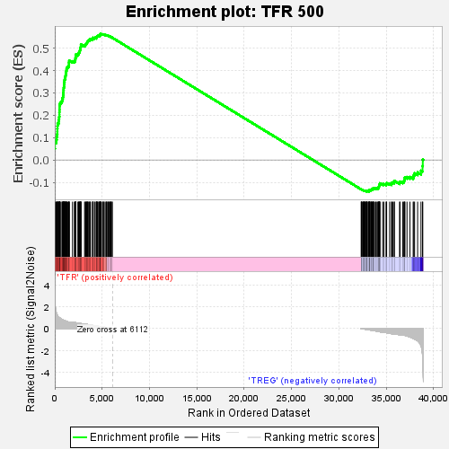
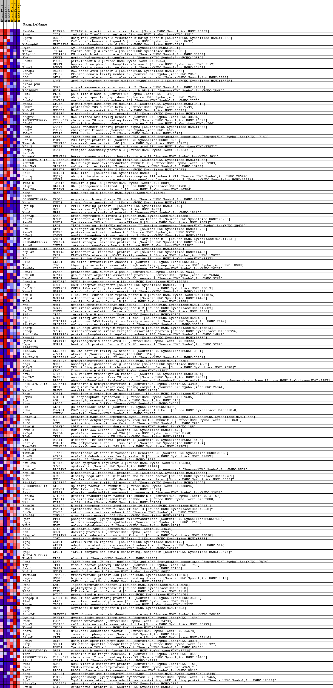
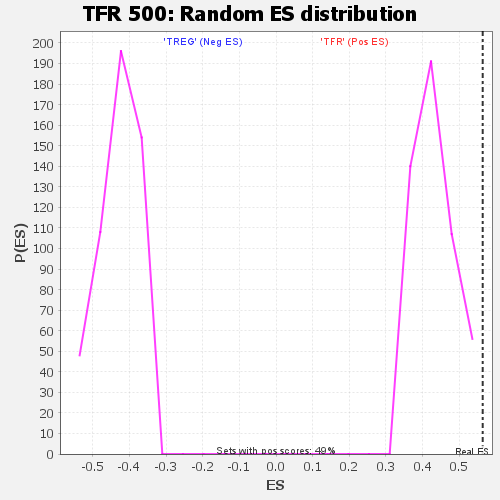

| | | Dataset | BL_TFRvsTREG_TFRvsTREG.tfr_vs_treg_cls.cls#TFR_versus_TREG |
| Phenotype | tfr_vs_treg_cls.cls#TFR_versus_TREG |
| Upregulated in class | TFR |
| GeneSet | TFR 500 |
| Enrichment Score (ES) | 0.5640063 |
| Normalized Enrichment Score (NES) | 1.2897756 |
| Nominal p-value | 0.0 |
| FDR q-value | 0.08628662 |
| FWER p-Value | 0.056 |
Table: GSEA Results Summary

Fig 1: Enrichment plot: TFR 500
Profile of the Running ES Score & Positions of GeneSet Members on the Rank Ordered List
| SYMBOL | TITLE | RANK IN GENE LIST | RANK METRIC SCORE | RUNNING ES | CORE ENRICHMENT | | 1 | Fam64a | na | 0 | 4.752 | 0.0505 | Yes |
| 2 | Icos | na | 18 | 2.623 | 0.0779 | Yes |
| 3 | Uqcrb | na | 145 | 1.480 | 0.0904 | Yes |
| 4 | Ccl5 | na | 202 | 1.327 | 0.1030 | Yes |
| 5 | Mphosph6 | na | 248 | 1.248 | 0.1151 | Yes |
| 6 | Lyar | na | 269 | 1.209 | 0.1275 | Yes |
| 7 | Tor4a | na | 272 | 1.201 | 0.1402 | Yes |
| 8 | Ehbp1l1 | na | 282 | 1.185 | 0.1525 | Yes |
| 9 | Shmt1 | na | 302 | 1.147 | 0.1642 | Yes |
| 10 | Prdx2 | na | 404 | 1.053 | 0.1728 | Yes |
| 11 | Hprt | na | 435 | 1.028 | 0.1830 | Yes |
| 12 | Runx3 | na | 461 | 1.008 | 0.1930 | Yes |
| 13 | Dazap2 | na | 482 | 0.993 | 0.2030 | Yes |
| 14 | Efhd2 | na | 485 | 0.991 | 0.2135 | Yes |
| 15 | Ofd1 | na | 493 | 0.986 | 0.2238 | Yes |
| 16 | Arnt2 | na | 507 | 0.979 | 0.2339 | Yes |
| 17 | Eif4a-ps4 | na | 509 | 0.976 | 0.2442 | Yes |
| 18 | Ssr2 | na | 550 | 0.951 | 0.2533 | Yes |
| 19 | BC030867 | na | 642 | 0.880 | 0.2603 | Yes |
| 20 | Plk4 | na | 759 | 0.823 | 0.2661 | Yes |
| 21 | Usp5 | na | 803 | 0.803 | 0.2735 | Yes |
| 22 | Cox6a1 | na | 847 | 0.784 | 0.2807 | Yes |
| 23 | Spcs3 | na | 879 | 0.773 | 0.2881 | Yes |
| 24 | Psmb2 | na | 888 | 0.769 | 0.2961 | Yes |
| 25 | Nudcd2 | na | 921 | 0.753 | 0.3032 | Yes |
| 26 | Mrpl54 | na | 930 | 0.750 | 0.3110 | Yes |
| 27 | Mrgpre | na | 939 | 0.748 | 0.3187 | Yes |
| 28 | 1700037H04Rik | na | 952 | 0.742 | 0.3263 | Yes |
| 29 | C2cd2 | na | 974 | 0.733 | 0.3336 | Yes |
| 30 | Cebpa | na | 978 | 0.732 | 0.3413 | Yes |
| 31 | Chek2 | na | 1011 | 0.723 | 0.3481 | Yes |
| 32 | Fkbp2 | na | 1031 | 0.718 | 0.3553 | Yes |
| 33 | Lsm5 | na | 1048 | 0.711 | 0.3624 | Yes |
| 34 | Phf10 | na | 1122 | 0.691 | 0.3679 | Yes |
| 35 | Tmem14c | na | 1127 | 0.690 | 0.3751 | Yes |
| 36 | Nfil3 | na | 1152 | 0.682 | 0.3817 | Yes |
| 37 | Reep3 | na | 1175 | 0.672 | 0.3883 | Yes |
| 38 | Gm5559 | na | 1192 | 0.667 | 0.3950 | Yes |
| 39 | Hnrnpa1 | na | 1231 | 0.654 | 0.4009 | Yes |
| 40 | 1810009A15Rik | na | 1241 | 0.651 | 0.4076 | Yes |
| 41 | Ndufb8 | na | 1285 | 0.636 | 0.4133 | Yes |
| 42 | Slc17a5 | na | 1380 | 0.608 | 0.4173 | Yes |
| 43 | Heatr3 | na | 1465 | 0.588 | 0.4214 | Yes |
| 44 | Bcl2l1 | na | 1498 | 0.582 | 0.4267 | Yes |
| 45 | Uqcrq | na | 1502 | 0.581 | 0.4328 | Yes |
| 46 | Syne3 | na | 1507 | 0.580 | 0.4389 | Yes |
| 47 | Tuba1b | na | 1527 | 0.577 | 0.4445 | Yes |
| 48 | Glipr1 | na | 1868 | 0.562 | 0.4417 | Yes |
| 49 | Fam129a | na | 2065 | 0.543 | 0.4424 | Yes |
| 50 | Msh6 | na | 2151 | 0.534 | 0.4459 | Yes |
| 51 | Dleu2 | na | 2171 | 0.532 | 0.4511 | Yes |
| 52 | 0610007P14Rik | na | 2185 | 0.530 | 0.4564 | Yes |
| 53 | Kntc1 | na | 2205 | 0.526 | 0.4615 | Yes |
| 54 | Ppfibp1 | na | 2209 | 0.525 | 0.4670 | Yes |
| 55 | Hk2 | na | 2226 | 0.524 | 0.4721 | Yes |
| 56 | Mpp6 | na | 2435 | 0.495 | 0.4720 | Yes |
| 57 | Ngfrap1 | na | 2507 | 0.483 | 0.4753 | Yes |
| 58 | Mtif3 | na | 2521 | 0.481 | 0.4801 | Yes |
| 59 | Psmd9 | na | 2596 | 0.474 | 0.4832 | Yes |
| 60 | Leo1 | na | 2619 | 0.471 | 0.4877 | Yes |
| 61 | Gfm1 | na | 2660 | 0.462 | 0.4915 | Yes |
| 62 | Psme3 | na | 2683 | 0.460 | 0.4959 | Yes |
| 63 | Cdkn3 | na | 2698 | 0.456 | 0.5003 | Yes |
| 64 | Cnih1 | na | 2722 | 0.453 | 0.5046 | Yes |
| 65 | 2210404O07Rik | na | 2757 | 0.448 | 0.5084 | Yes |
| 66 | Ints9 | na | 2761 | 0.447 | 0.5131 | Yes |
| 67 | 1110008F13Rik | na | 2765 | 0.447 | 0.5178 | Yes |
| 68 | Mrpl42 | na | 3146 | 0.408 | 0.5123 | Yes |
| 69 | Erc1 | na | 3213 | 0.398 | 0.5148 | Yes |
| 70 | F2r | na | 3267 | 0.388 | 0.5176 | Yes |
| 71 | Clic1 | na | 3333 | 0.378 | 0.5199 | Yes |
| 72 | Tox | na | 3356 | 0.376 | 0.5233 | Yes |
| 73 | Fam96a | na | 3409 | 0.368 | 0.5259 | Yes |
| 74 | Psma4 | na | 3449 | 0.363 | 0.5288 | Yes |
| 75 | Gemin8 | na | 3471 | 0.359 | 0.5320 | Yes |
| 76 | Hspd1 | na | 3533 | 0.349 | 0.5342 | Yes |
| 77 | Psmc3ip | na | 3619 | 0.337 | 0.5356 | Yes |
| 78 | Crcp | na | 3679 | 0.328 | 0.5375 | Yes |
| 79 | Cwf19l1 | na | 3717 | 0.321 | 0.5400 | Yes |
| 80 | Mrps5 | na | 3772 | 0.314 | 0.5419 | Yes |
| 81 | Fbxl8 | na | 3988 | 0.283 | 0.5394 | Yes |
| 82 | Mrpl41 | na | 4004 | 0.281 | 0.5420 | Yes |
| 83 | Tbcb | na | 4028 | 0.277 | 0.5443 | Yes |
| 84 | Mns1 | na | 4035 | 0.276 | 0.5471 | Yes |
| 85 | Skap2 | na | 4191 | 0.256 | 0.5458 | Yes |
| 86 | Cstf2 | na | 4246 | 0.248 | 0.5471 | Yes |
| 87 | Il9r | na | 4385 | 0.230 | 0.5459 | Yes |
| 88 | Arl1 | na | 4388 | 0.230 | 0.5483 | Yes |
| 89 | Cyp51 | na | 4422 | 0.225 | 0.5499 | Yes |
| 90 | Slc52a2 | na | 4436 | 0.222 | 0.5519 | Yes |
| 91 | Nrarp | na | 4476 | 0.217 | 0.5532 | Yes |
| 92 | Strap | na | 4528 | 0.210 | 0.5541 | Yes |
| 93 | Ppp1r16a | na | 4566 | 0.206 | 0.5553 | Yes |
| 94 | Mrps33 | na | 4680 | 0.188 | 0.5544 | Yes |
| 95 | Spata13 | na | 4737 | 0.181 | 0.5549 | Yes |
| 96 | Hspe1 | na | 4762 | 0.178 | 0.5562 | Yes |
| 97 | AI662270 | na | 4779 | 0.175 | 0.5576 | Yes |
| 98 | Slc25a5 | na | 4794 | 0.173 | 0.5591 | Yes |
| 99 | Atxn1 | na | 4810 | 0.171 | 0.5605 | Yes |
| 100 | Slc22a15 | na | 4812 | 0.171 | 0.5623 | Yes |
| 101 | Mettl7a1 | na | 4818 | 0.170 | 0.5640 | Yes |
| 102 | Mogs | na | 4896 | 0.161 | 0.5637 | No |
| 103 | Rbbp7 | na | 5030 | 0.143 | 0.5618 | No |
| 104 | Fbxo4 | na | 5106 | 0.134 | 0.5613 | No |
| 105 | Etv5 | na | 5123 | 0.132 | 0.5623 | No |
| 106 | Man2b2 | na | 5198 | 0.121 | 0.5617 | No |
| 107 | Paics | na | 5314 | 0.105 | 0.5598 | No |
| 108 | 2410127L17Rik | na | 5418 | 0.091 | 0.5581 | No |
| 109 | Ufc1 | na | 5450 | 0.087 | 0.5583 | No |
| 110 | Matn2 | na | 5490 | 0.081 | 0.5581 | No |
| 111 | Erap1 | na | 5581 | 0.067 | 0.5565 | No |
| 112 | Sephs1 | na | 5650 | 0.059 | 0.5554 | No |
| 113 | Aga | na | 5678 | 0.056 | 0.5553 | No |
| 114 | Apool | na | 5754 | 0.045 | 0.5538 | No |
| 115 | Glb1 | na | 5838 | 0.034 | 0.5520 | No |
| 116 | Cdkal1 | na | 5888 | 0.027 | 0.5510 | No |
| 117 | Cntln | na | 5892 | 0.027 | 0.5513 | No |
| 118 | Prkar1a | na | 5937 | 0.021 | 0.5503 | No |
| 119 | Sdhb | na | 6051 | 0.007 | 0.5475 | No |
| 120 | Atf6 | na | 6068 | 0.005 | 0.5471 | No |
| 121 | Adam10 | na | 32362 | -0.002 | -0.1319 | No |
| 122 | Ruvbl2 | na | 32367 | -0.003 | -0.1319 | No |
| 123 | Pa2g4 | na | 32390 | -0.006 | -0.1324 | No |
| 124 | Tfeb | na | 32403 | -0.008 | -0.1327 | No |
| 125 | Dkkl1 | na | 32491 | -0.019 | -0.1347 | No |
| 126 | Polr1c | na | 32563 | -0.030 | -0.1362 | No |
| 127 | Tmem243 | na | 32584 | -0.032 | -0.1364 | No |
| 128 | Gm17134 | na | 32610 | -0.035 | -0.1367 | No |
| 129 | Timm50 | na | 32648 | -0.041 | -0.1372 | No |
| 130 | Acad9 | na | 32690 | -0.047 | -0.1378 | No |
| 131 | Ccng2 | na | 32700 | -0.048 | -0.1375 | No |
| 132 | Fam129b | na | 32733 | -0.053 | -0.1377 | No |
| 133 | Stx6 | na | 32784 | -0.059 | -0.1384 | No |
| 134 | Pacsin2 | na | 32825 | -0.065 | -0.1388 | No |
| 135 | Mrpl48 | na | 32880 | -0.072 | -0.1394 | No |
| 136 | Denr | na | 32921 | -0.078 | -0.1396 | No |
| 137 | Nudc | na | 32946 | -0.081 | -0.1393 | No |
| 138 | Slc35a2 | na | 32951 | -0.082 | -0.1386 | No |
| 139 | 0610009D07Rik | na | 32954 | -0.082 | -0.1378 | No |
| 140 | Rbmxl1 | na | 32987 | -0.087 | -0.1377 | No |
| 141 | Pear1 | na | 33081 | -0.097 | -0.1390 | No |
| 142 | Gtf2h5 | na | 33161 | -0.109 | -0.1399 | No |
| 143 | Clns1a | na | 33188 | -0.113 | -0.1394 | No |
| 144 | Vill | na | 33189 | -0.113 | -0.1382 | No |
| 145 | Bcap29 | na | 33198 | -0.114 | -0.1372 | No |
| 146 | Psmd13 | na | 33199 | -0.114 | -0.1360 | No |
| 147 | Cox7c | na | 33229 | -0.118 | -0.1355 | No |
| 148 | Zfp444 | na | 33266 | -0.122 | -0.1351 | No |
| 149 | Ppat | na | 33270 | -0.123 | -0.1339 | No |
| 150 | Umps | na | 33366 | -0.139 | -0.1348 | No |
| 151 | Mdh2 | na | 33392 | -0.143 | -0.1340 | No |
| 152 | Atl3 | na | 33430 | -0.149 | -0.1333 | No |
| 153 | Dok1 | na | 33444 | -0.151 | -0.1321 | No |
| 154 | Ciapin1 | na | 33518 | -0.162 | -0.1322 | No |
| 155 | Idh2 | na | 33580 | -0.171 | -0.1320 | No |
| 156 | Agfg1 | na | 33598 | -0.174 | -0.1306 | No |
| 157 | Ap2m1 | na | 33621 | -0.178 | -0.1293 | No |
| 158 | Galm | na | 33626 | -0.178 | -0.1275 | No |
| 159 | Spg21 | na | 33628 | -0.178 | -0.1256 | No |
| 160 | 4632419I22Rik | na | 33690 | -0.189 | -0.1252 | No |
| 161 | Tceb3 | na | 33837 | -0.212 | -0.1267 | No |
| 162 | Lsm3 | na | 33890 | -0.220 | -0.1257 | No |
| 163 | Tfpi | na | 34022 | -0.242 | -0.1265 | No |
| 164 | Saal1 | na | 34073 | -0.250 | -0.1251 | No |
| 165 | Nudt5 | na | 34185 | -0.269 | -0.1252 | No |
| 166 | Tmem230 | na | 34202 | -0.272 | -0.1227 | No |
| 167 | Hmgn5 | na | 34219 | -0.276 | -0.1202 | No |
| 168 | Cdv3 | na | 34234 | -0.278 | -0.1176 | No |
| 169 | Lmf2 | na | 34253 | -0.282 | -0.1150 | No |
| 170 | Ppie | na | 34272 | -0.285 | -0.1125 | No |
| 171 | E2f4 | na | 34284 | -0.287 | -0.1097 | No |
| 172 | Ptgr2 | na | 34328 | -0.299 | -0.1076 | No |
| 173 | Arhgap10 | na | 34329 | -0.300 | -0.1044 | No |
| 174 | Alad | na | 34619 | -0.353 | -0.1082 | No |
| 175 | Troap | na | 34751 | -0.358 | -0.1077 | No |
| 176 | Osbp | na | 34983 | -0.369 | -0.1098 | No |
| 177 | Kifc1 | na | 35012 | -0.377 | -0.1065 | No |
| 178 | Spty2d1 | na | 35042 | -0.383 | -0.1032 | No |
| 179 | Dynlt3 | na | 35355 | -0.442 | -0.1066 | No |
| 180 | Fuom | na | 35556 | -0.467 | -0.1068 | No |
| 181 | Cdca7l | na | 35576 | -0.472 | -0.1022 | No |
| 182 | Thoc6 | na | 35702 | -0.487 | -0.1003 | No |
| 183 | Meaf6 | na | 35850 | -0.509 | -0.0987 | No |
| 184 | Itpa | na | 35857 | -0.511 | -0.0934 | No |
| 185 | Gltpd1 | na | 36409 | -0.556 | -0.1017 | No |
| 186 | Usp39 | na | 36452 | -0.557 | -0.0969 | No |
| 187 | Ssrp1 | na | 36736 | -0.573 | -0.0981 | No |
| 188 | Psmc1 | na | 36855 | -0.600 | -0.0948 | No |
| 189 | 1810022K09Rik | na | 36903 | -0.610 | -0.0895 | No |
| 190 | Tshz1 | na | 36948 | -0.620 | -0.0840 | No |
| 191 | 1190007I07Rik | na | 36966 | -0.624 | -0.0779 | No |
| 192 | Sirt5 | na | 37191 | -0.681 | -0.0764 | No |
| 193 | Bub3 | na | 37503 | -0.772 | -0.0762 | No |
| 194 | Gmds | na | 37842 | -0.897 | -0.0754 | No |
| 195 | Rad21 | na | 37909 | -0.919 | -0.0674 | No |
| 196 | Asrgl1 | na | 37992 | -0.956 | -0.0593 | No |
| 197 | Prps2 | na | 38313 | -1.117 | -0.0557 | No |
| 198 | Gga2 | na | 38668 | -1.580 | -0.0481 | No |
| 199 | Adora2a | na | 38830 | -2.391 | -0.0268 | No |
| 200 | Cep70 | na | 38857 | -2.744 | 0.0017 | No |
Table: GSEA details [plain text format]

Fig 2: TFR 500
Blue-Pink O' Gram in the Space of the Analyzed GeneSet

Fig 3: TFR 500: Random ES distribution
Gene set null distribution of ES for TFR 500